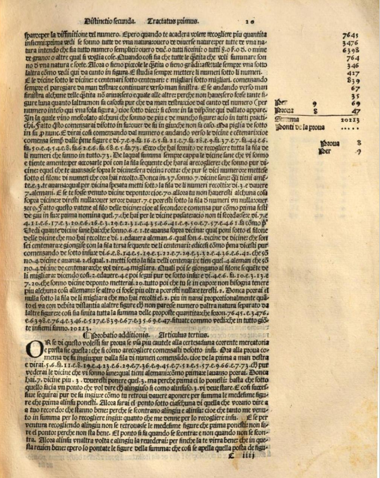

Tabulære data
| Påstandstabellen | ||
|---|---|---|
| Påstand | Sant/Usant/Uavklart | Utforskning |
| Data er grunnlaget for all databehandling. | Uavklart | |
| Programmeringsmiljøer er designet for databehandling. | Uavklart | |
| Data-sentrert introduksjon til programmering er bedre enn syntaks-sentrert introduksjon. | Uavklart | |
| Tabeller er rigide datastrukturer og er ikke godt egnet for dataanalyse ved hjelp av progammeringsmiljøer. | Uavklart | |
| Det grafiske brukergrensesnittet er en mengde med tabeller (med tanke på layout .htm). | Uavklart | |
| Alle databehandlingsproblemer kan modelleres med CRUD-modellen. | Uavklart | |
Tabell 1. Påstandstabellen.
Temaets video:
- Machine Learning on Tabular Data.htm
Temaets navn:
- Al-Khwārizmī (9. århundre .htm)
- Luca Pacioli (publiserte bok om dobbelt bokholderi i 1494)

Figur 1. al-Khwārizmī et Otto Neugebauer. Corpus Christ College MS 283 (1). 12. århundre (eksempel på tabulære data).
Figur 2. En side fra Summa de Arithmetica geometria proportioni (1494) av Luca Pacioli (eksempel på regnark).
Layout er en "moderne" eksempel på bruk av tabulære data ).htm).
Temaets kode:
Relevante referanser, som dere kan bruke når dere jobber gjennom koden:
- Et ekstra bibliotek for arbeid med tabeller
dcic-2021: https://hackmd.io/@cs111/table - Pensumslitteratur fra Kap. 7 til Kap. 10 (relevant for dette tema): https://dcic-world.org/2022-01-25/intro-tabular-data.html
- Pyret dokumentasjon relevant for arbeid med tabeller: https://pyret.org/docs/latest/tables.html
Kodeeksempel 1 (forstå behandling av tabulære data)
include shared-gdrive("dcic-2021", "1wyQZj_L0qqV9Ekgr9au6RX2iqt2Ga8Ep") shuttle = table: month, riders row: "Jan", 1123 row: "Feb", 1045 row: "Mar", 1087 row: "Apr", 999 end # SQL-lignende (relatert til READ i CRUD) month = select month from shuttle end check: month is table: month row: "Jan" row: "Feb" row: "Mar" row: "Apr" end end # reservert ord "sieve" (innebygd funksjon; READ i CRUD) # sile eller filtrere less-than-1K = sieve shuttle using riders: riders < 1000 end check: less-than-1K is table: month, riders row: "Apr", 999 end end # metode (knyttet til en instans; READ i CRUD) fun below-1K(r :: Row) -> Boolean: doc: "determine whether row has fewer than 1000 riders" r["riders"] < 1000 # r.get-column("riders") where: below-1K(shuttle.row-n(2)) is false below-1K(shuttle.row-n(3)) is true end # metode (READ i CRU) fun is-winter(r :: Row) -> Boolean: doc: "is the given month a winter month?" month = r["month"] string-equal(month, "Jan") or string-equal(month, "Feb") where: is-winter(shuttle.row-n(0)) is true is-winter(shuttle.row-n(3)) is true end # videre analyse vha. funksjoner i Pyret # må inkludere dcic-2021 https://hackmd.io/@cs111/table winter = filter-with(shuttle, is-winter) # Oppgave: skriv en sjekk for winter order-by(winter, "riders", true) # samme men med hjelp av reservte ord order winter: riders ascending end # sjekk om begge funksjonene kan brukes # less-than-1K og below-1K below-1K-test = filter-with(shuttle, below-1K) order-by(below-1K-test, "riders", true)
Fra pensumslitteratur Kap. 7: Pyret offers three different notations for processing tables: one uses functions, one uses methods, and one uses a SQL-like notation. This chapter uses the function-based notation. The SQL-like notation and the methods-based notation are shown in the Pyret Documentation.
CRUD-modellen: Create Read Update Delete
1 Tabeller
| Verktøy BOT: Beregningsorientert tenkning | ||
|---|---|---|
| Pyret funksjoner / innebygde ord | Eksempel | Beskrivelse |
| table, load-table, source, sanitize, sieve, using, select, from, order, ascending, descending, transform, extract | såkalte reserverte ord, som inngår i uttrykk og er relatert til behandling av tabeller | CREATE, READ og UPDATE (sanitize) i CRUD |
| filter-with | filter-with(tabell, funksjon) | READ i CRUD: Filtrer (søk i) tabell med en funksjon (som har en rad som argument); returnerer tabell som inneholder filtrerte resultater |
| fortsett med tabellen selv | ||
Tabell 2. Pyret funksjon for CRUD.
2 Arbeid i klassen
Oppgave i klassen #1
Diskuter med en eller flere personer i proksimal nærhet din forståelse av abstraksjoner for data i et dataprogram.
Hvilke abstraksjoner husker du fra de 6 tidligere temaer/samlinger?
Hva forbinder du med beregningsrelatert tenkning?
Oppgave i klassen #2
Tenk om noe, som du kan samle data om og hvor disse dataene kan presenteres i tabellform.
Sammen med en eller flere personer i proksimal nærhet, finn noen data for tabellen.
Oppgave i klassen #3
Det er gitt en modell for evaluering av Progoblig 01 (individuell del). Følgende kolonner er foreslått:
Id,col-1a,col-1b, ...,col-2g.Sammen med en eller flere personer i proksimal nærhet, finn representative data en tabell, som gjenspeiler modellen.
3 Diverse "verktøy"
Denne delen viser eksempler på de tre mest brukte datalagringsmedier i dag. Det er et "verktøy" for å forstå at alle abstraksjoner i programmeringsspråket "ender opp" i et lagringsmedium. CRUD-modellen er et nyttig "verktøy" i forbindelse med lagringsmedier og på alle abstraksjonsnivåer i maskinvaren.

Figur 3. Fysisk (flyktig) minnemodul (DRAM, bilde fra komplett.no).

Figur 4. Fysisk minne (stabil) Solid-state Drive (bilde fra i.pcmag.com).

Figur 5. Fysisk minne (stabil) Hard Disk Drive (bilde fra i.pcmag.com).
4 Referanser
- A portrait of Tenochtitlan. (2023). Thomaskole.nl. https://tenochtitlan.thomaskole.nl/ (A Portrait of Tenochtitlan, 2023)
- Brown, N., Guzdial, M. J., Krishnamurthi, S., & Mönig, J. (2023). Educational Programming Languages and Systems (Dagstuhl Seminar 22302). Dagstuhl Reports, 12(7). https://doi.org/10.4230/DagRep.12.7.205 (Brown et al., 2023)
- CS50x 2023. (2023). Harvard.edu. https://cs50.harvard.edu/x/2023/ (CS50x 2023, 2023)
- CSBridge. (2023). CSBridge. https://codeinplace.stanford.edu/ (CSBridge, 2023)
- Det Norske Akademis ordbok. (2023a). Naob.no. https://naob.no/ordbok/funksjon (Det Norske Akademis Ordbok, 2023a)
- Introduction to Computer Science and Programming in Python | Electrical Engineering and Computer Science | MIT OpenCourseWare. (2016). MIT OpenCourseWare. https://ocw.mit.edu/courses/6-0001-introduction-to-computer-science-and-programming-in-python-fall-2016/ (Introduction to Computer Science and Programming in Python | Electrical Engineering and Computer Science | MIT OpenCourseWare, 2016)
- Krishnamurthi, S. (2008). Teaching programming languages in a post-linnaean age. ACM SIGPLAN Notices, 43(11), 81–83. https://doi.org/10.1145/1480828.1480846 (Krishnamurthi, 2008)
- Kunnskapsdepartementet. (2023, April 20). Strategi for digital kompetanse og infrastruktur i barnehage og skole. Regjeringen.no; Regjeringen.no. https://www.regjeringen.no/no/dokumenter/strategi-for-digital-kompetanse-og-infrastruktur-i-barnehage-og-skole/id2972254/?ch=5
- Lau, S., & Guo, P. (2023). From "Ban It Till We Understand It" to "Resistance is Futile": How University Programming Instructors Plan to Adapt as More Students Use AI Code Generation and Explanation Tools such as ChatGPT and GitHub Copilot https://doi.org/10.1145/3568813.3600138 (Lau & Guo, 2023)
- Notional Machines. (2023). Notional Machines. https://notionalmachines.github.io/notional-machines.html (Notional Machines, 2023)
- PLATO Empire - Empire 1. (2016). Daleske.com. http://www.daleske.com/plato/empire1.php (PLATO Empire - Empire 1, 2016)
- Su, J., & Yang, W. (2023). A systematic review of integrating computational thinking in early childhood education. Computers and Education Open, 4, 100122–100122. https://doi.org/10.1016/j.caeo.2023.100122 (Su & Yang, 2023)
- Wing, J. M. (2006). Computational thinking. Communications of the ACM, 49(3), 33. https://doi.org/10.1145/1118178.1118215 (Wing, 2006)